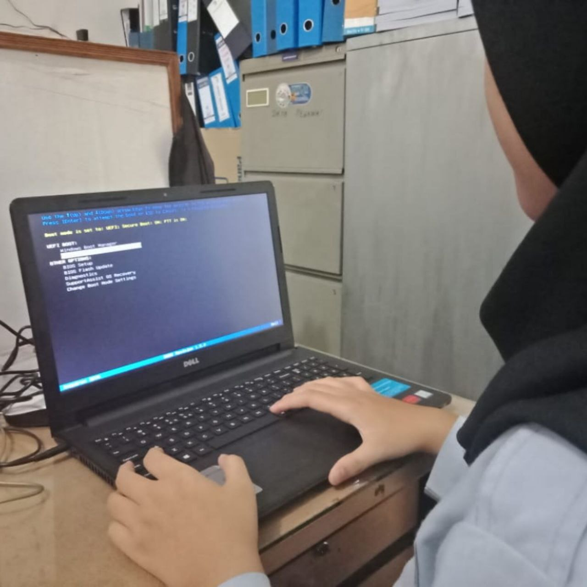
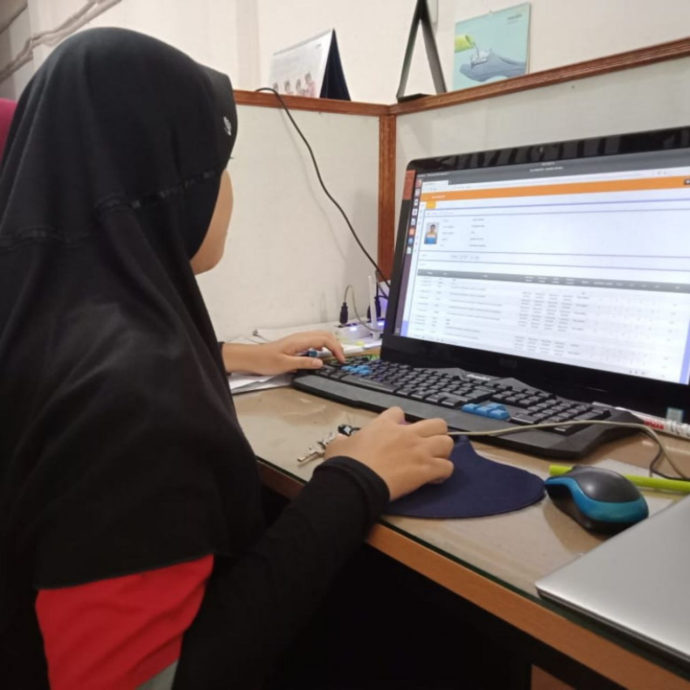
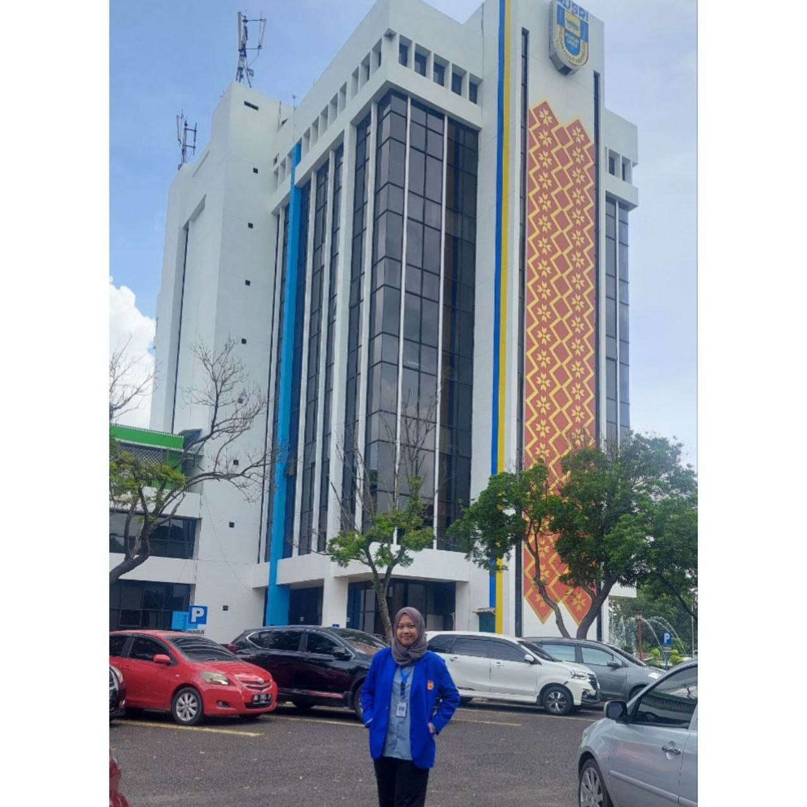
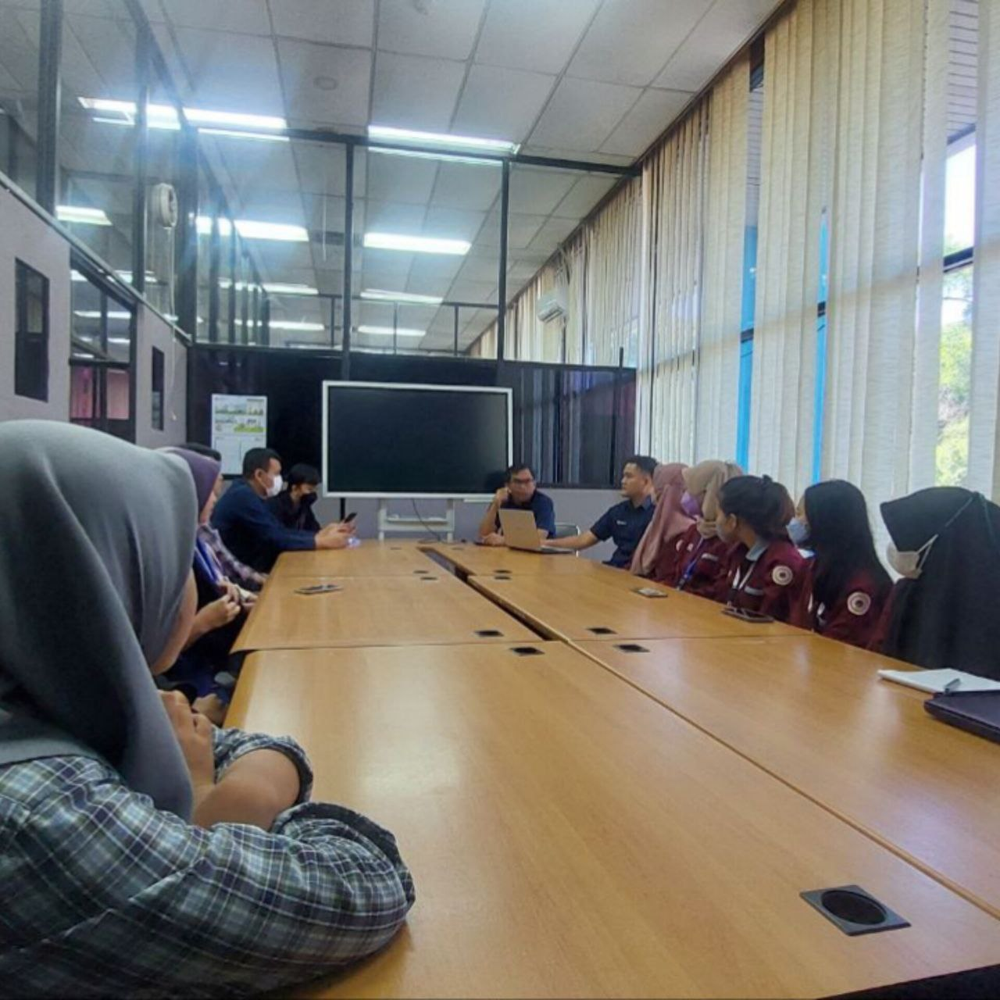

Experience


Asisten
Bukit Asam Kreatif | Tanjung Enim, Indonesia
01/2019 – 04/2019
- Membantu staff mengelola data karyawan.
- Membantu staff dalam pekerjaan.
- Membuat web sederhana SMK Bukit Asam sebagai tugas akhir Praktek Kerja Lapangan.


Quality Assurance
PT Pupuk Sriwidjaja | Palembang, Indonesia
02/2023 – 06/2023
- Jalankan pengujian dan aktivitas peningkatan kualitas.
- Mematuhi standar kualitas dan keamanan industri.
- Buat laporan yang mendokumentasikan kesalahan dan masalah untuk diperbaiki.
- Menjaga standar untuk keandalan dan kinerja produksi.
Revou Tech Academy Data & Software Engineering
PT Revolusi Cita Edukasi | Jakarta, Indonesia
08/2023 – 12/2023
- Melakukan data cleaning yang berguna mempersiapkan data untuk analisis.
- Bertanggung jawab pada sisi bagian Front End Engineer dalam menentukan dan membuat tampilan menarik pada website.